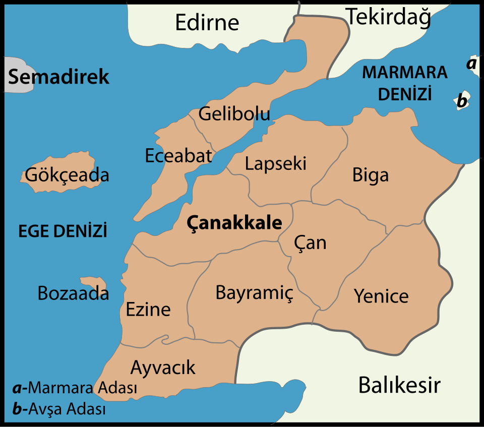
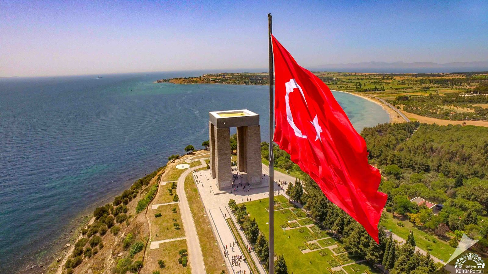
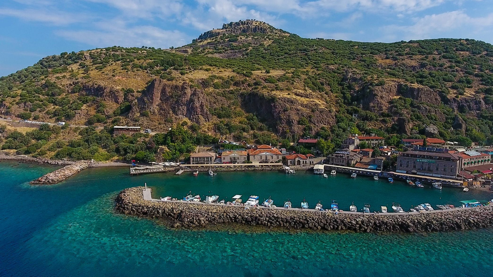
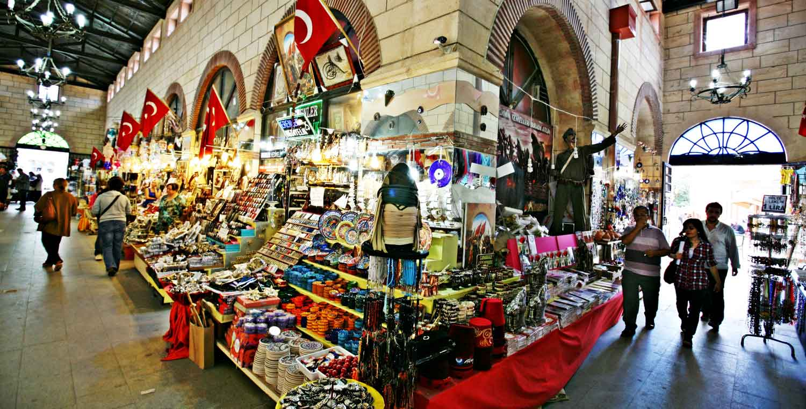
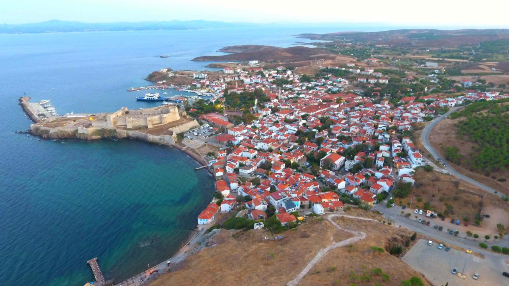
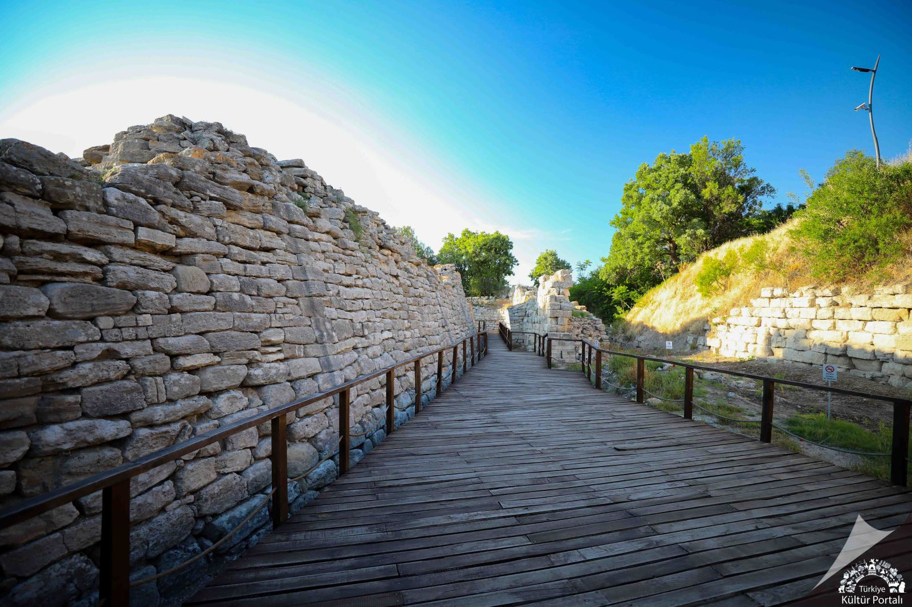
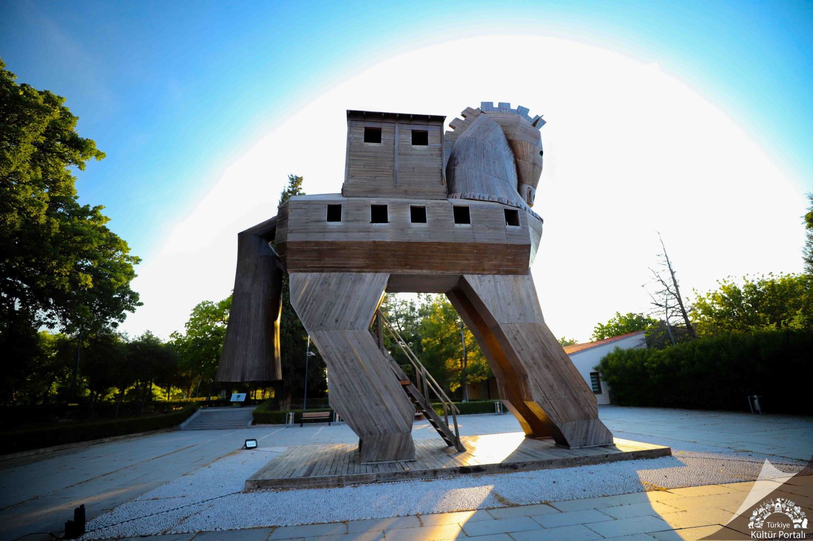

Ben İstanbul'da doğdum, İstanbul'da büyüdüm. Babam da aynı şekilde. Kütüğümüz ise Muş. Hayatımda hiç gitmediğim, nasıl olduğunu bilmediğim bir yeri anlatmak istemedim. Beni ben yapan, hem doğduğum hem de doyduğum yeri sunmak istedim. Ama aynı zaman da İstanbul gibi bir şehri memleket olarak tanıtmayı içim sinmedi. Bu yüzden gidip görüp gezdiğim, kültürel bir mirasımız olan, aynı zaman da oralı olan dostumun isteği üzerine Çanakkale'yi tanıtmaya karar verdim.
Kısa bir deyiş...
ÇANAKKALE
Nüfus Bilgileri
- Çanakkale'nin toplam nüfusu 2024 yılı ADNKS sonuçlarına göre; 573.976'dir.
- Nüfus büyüklüğüne göre iller arasında 38. sırada yer almaktadır.
- Türkiye nüfusunun %0,66’sı Çanakkale’de ikamet etmektedir.
- Toplam nüfusun 356.050’si il ve ilçe merkezlerinde, 217.926’sı belde ve köylerde yaşamaktadır.
- Nüfus yoğunluğu 58’dir. İller sıralamasında 52. sırada yer almaktadır.
- Yıllık nüfus artış hızı binde 8,8 olup, iller sıralamasında 14. sırada yer almaktadır.
İlçeleri
- Ayvacık: Assos Antik Kenti'ne ev sahipliği yapar.
- Bayramiç: Kaz Dağları eteklerinde yer alır.
- Biga: Çanakkale'nin yüzölçümü en büyük ilçesidir.
- Çan: Sanayisi ve seramik fabrikalarıyla öne çıkar.
- Çanakkale (Merkez): İl merkezidir.
- Eceabat: Gelibolu Yarımadası Tarihi Milli Parkı buradadır.
- Ezine: Peyniri ile meşhurdur.
- Gelibolu: Tarihi öneme sahip sahil ilçesidir.
- Gökçeada (İmroz): Türkiye'nin en büyük adası ve ilçesidir.
- Lapseki: Meyvecilik ve köprü bağlantısıyla bilinir.
- Yenice: Ormanlık alanı geniş olan ilçedir.

Yöresel Lezzetler
| Ovmaç Çorbası | Sade ve pirinçli olarak hazırlanır. |
|---|---|
| Domatesli Tarhana Çorbası | Tarhana ve domates ya da salçanın eşsiz karışımıdır. |
| İskorpit Çorbası | İskorpit balığının sebzelerle haşlanmasıyla hazırlanan bir balık çorbasıdır. |
| Ispanak Çorbası | Taze ıspanak, soğan ve baharatlarla birlikte unla terbiye edilir. |
| Tumbi | Patlıcan, domates, soğan ile hazırlanan, kavrularak fırınlanan bir bulgur köftesi çeşididir. |
| Ispanak Sarması | Ispanak içerisine pirinçli/bulgurlu ve kıymalı iç harç konularak sarılıp salçalı sosla pişirildiği bir sebze yemeğidir. |
| Çırpma | Ispanak veya yeşil soğan gibi sebzelerin unlu-su karışımla harmanlanıp fırın tepsisine yayılarak pişirildiği, börek benzeri hafif ve pratik bir sebze yemeğidir. |
| Melki Yemeği | Kanlıca mantarının (melki) zeytinyağı, soğan ve bazen domatesle yapılan, etli dokuya sahip yoğun aromalı yöresel kavurmasıdır. |
| Yumurtalı Tiken | Şevketi bostan (tiken) otunun soğan ve yumurta ile pişirilmesiyle hazırlanan yöresel ve sağlıklı bir ot yemeğidir. |
| Metez | Metez, genellikle lor peyniri, patates veya kıyma ile doldurulup suda haşlanan, bazen pekmezle de tüketilen, Çerkes mutfağına özgü bir mantı türüdür. |
| Tarhanalı Patlıcan | Doğranmış patlıcanların soğan, zeytinyağı ve tarhana ile harmanlanarak pişirildiği, besleyici ve lezzetli bir tencere yemeğidir. |
| Börülce Köftesi | Haşlanmış börülcelerin soğan, maydanoz, yumurta ve çeşitli baharatlarla yoğrulup yağda kızartılmasıyla yapılan bir lezzettir. |
Gezilecek Yerler
1. Gelibolu Tarihi Milli Parkı
Çanakkale Savaşları'nın yaşandığı, manevi atmosferiyle her Türk vatandaşının görmesi gereken kutsal topraklardır. Conkbayırı, Anzak Koyu ve Şehitler Abidesi gibi destanın yazıldığı noktaları barındırır.

2. Assos Antik Kenti (Behramkale)
Ayvacık ilçesinde bulunan Assos, felsefenin kurucularından Aristoteles'in de bir dönem yaşadığı tarihi bir liman kentidir. Athena Tapınağı'ndan Ege Denizi'ne karşı güneşi batırmak eşsiz bir deneyimdir.

3. Aynalı Çarşı
Çanakkale türkülerine konu olmuş, şehrin en sembolik ve tarihi alışveriş noktalarından biridir. 1890 yılında inşa edilen çarşıda, şehrin ruhunu yansıtan yöresel hediyelik eşyalar ve el sanatları ürünleri bulabilirsiniz.

4. Bozcaada
Türkiye'nin en büyük üçüncü adası olan Bozcaada; tarihi kalesi, rüzgar gülleri, Arnavut kaldırımlı Rum sokakları ve muhteşem buz gibi koylarıyla Çanakkale'nin en gözde turizm merkezlerinden biridir.

Kültürel Mirasımız: Troya Antik Kenti
Troya (Truva) Antik Kenti, Çanakkale'nin Tevfikiye köyü yakınlarında, Hisarlık Tepesi'nde yer alan Troya (Truva) Antik Kenti, 5000 yılı aşkın tarihi ve Homeros'un İlyada destanında anlatılan ünlü Troya Savaşı'na ev sahipliği yapmasıyla dünyanın en önemli arkeolojik alanlarından biridir. 1998'den beri UNESCO Dünya Mirası Listesi'nde bulunan ören yeri, üst üste binmiş 9 farklı yerleşim katmanı ile Tunç Çağı'ndan Roma Dönemi'ne uzanan kesintisiz bir tarihi gözler önüne serer.
- Homeros'un ünlü destanındaki Truva Savaşı'nın yaşandığı topraklardır.
- 1998 yılında UNESCO Dünya Kültür Mirası Listesi'ne alınarak uluslararası bir miras olarak tescillenmiştir.
- Antik kent girişinde, bölgeden çıkarılan eserlerin sergilendiği modern bir müze bulunur.
- Kent içerisinde, filmlerde ve efsanelerde geçen tahta Truva Atı'nın temsili bir heykeli yer alır.

